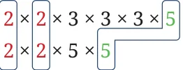

- 1.Make a general statement about the HCF for the following pairs
of numbers. You could consider examples before coming up with general statements. Look for possible explanations of why they hold.
- (a)Two consecutive even numbers
- (b)Two consecutive odd numbers
- (c)Two even numbers
- (d)Two consecutive numbers
- (e)Two co-prime numbers
Share your observations with the class.
- 2.The LCM of 3 and 24 is 24 (it is one of the two given numbers).
- (a)Find more such number pairs where the LCM is one of the two
numbers.
- (b)Make a general statement about such numbers. Describe such
number pairs using algebra.
- 3.Make a general statement about the LCM for the following pairs of
numbers. You could consider examples before coming up with these general statements. Look for possible explanations of why they hold.
- (a)Two multiples of 3
- (b)Two consecutive even numbers
- (c)Two consecutive numbers
- (d)Two co-prime numbers
What happens to the HCF of two numbers if both numbers are doubled? Take some pairs of numbers and explore. Are you able to see why the HCF will also double?
If both numbers are doubled, then both numbers get an extra factor of 2 in their prime factors. This 2 will be included as a factor in the largest common subpart, and so the HCF will double. For example, consider the numbers 270 and 50.
\(270 = 2 50 = 2 \times 5 \times\)

\(HCF = 2 \times 5 = 10\)
Let us double these numbers to get 540 and 100.

\(540 = 100 =\)
\(HCF = 2 \times 2 \times 5 =20\).
Consider the following two multiples of \(14 - 14 \times 6\), \(14 \times 9\). What is their HCF? Clearly, 14 is a common factor. Is it also the highest common factor? To see it, let us calculate the prime factorisations.

\(14 \times 6 = \times 2 \times 3\)
\(14 \times 9 = \times 3 \times 3\)
\(HCF = 14 \times 3 = 42\).
Here are some more numbers where both numbers are multiples of the same number. Find their HCF:
- (a)\(18 \times 10\), \(18 \times 15\) (b) \(10 \times 38\), \(10 \times 21\)
- (c)\(5 \times 13\), \(5 \times 20\) (d) \(12 \times 16\), \(12 \times 20\)
In which of these cases is the HCF the same as the common multiplier, like problem (b) where the HCF is 10? Explore a few more examples of this type to understand when this happens.